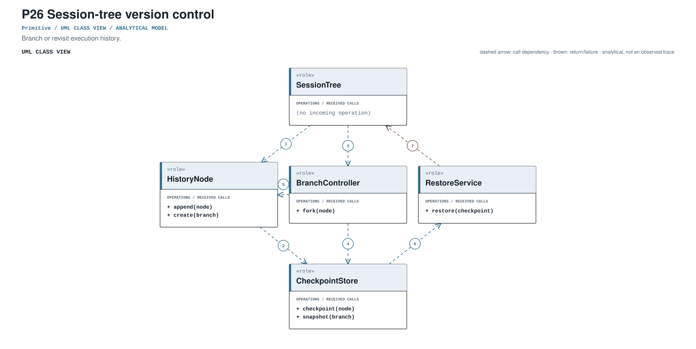
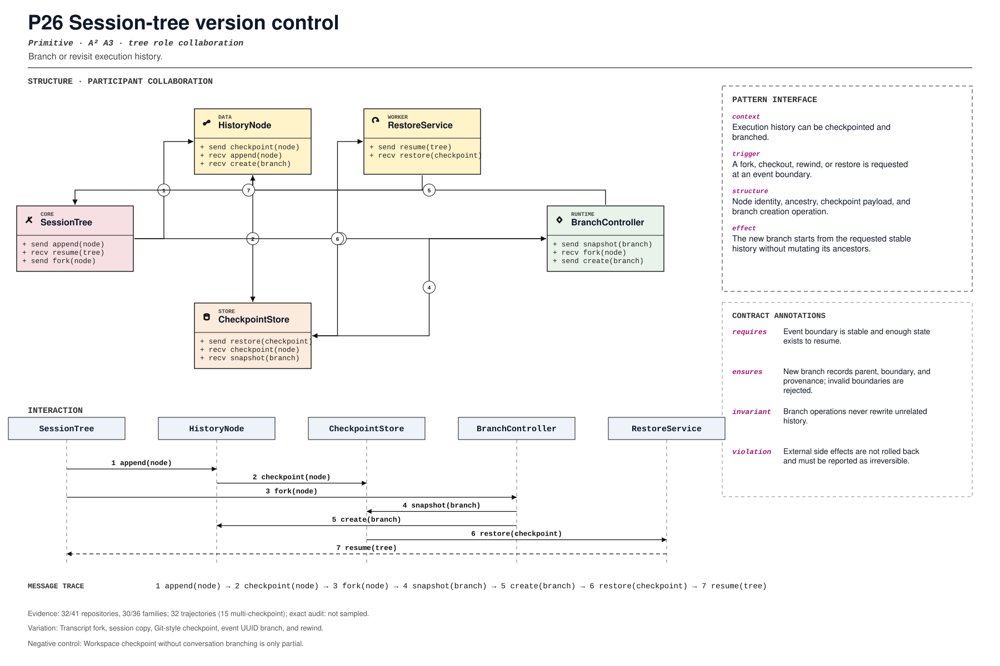

PROMPT SKETCH
Branch a conversation only at a stable event boundary. The new branch must record its parent, boundary, and provenance, and invalid or missing boundaries must be rejected.Branch or revisit execution history.
conversation_history_branchRECORD STATUSCandidate · v0.1.0The proposed contract drawn as participant roles, received calls, and numbered dependencies.

The same roles and calls as a class collaboration and a numbered message sequence.

Where the mechanism applies. All four dimensions belong to the proposed match, not just its vocabulary.
The obligation that clients, operators, and auditors should be able to rely on.
Workspace checkpoint without conversation branching is only partial.
The hot spot is admitted only where the protected semantics survive.
Transcript fork, session copy, Git-style checkpoint, event UUID branch, and rewind.
Test valid fork, invalid boundary, branch isolation, restore, and side-effect caveat.
Did workspace checkpointing converge with conversation trees?
An illustrative prompt and a small design sketch for the proposed contract. Names and APIs are invented; this is not a repository excerpt.
Branch a conversation only at a stable event boundary. The new branch must record its parent, boundary, and provenance, and invalid or missing boundaries must be rejected.def branch(session, boundary_event_id):
parent = session.events.by_id(boundary_event_id)
if parent is None or not parent.is_boundary:
raise InvalidBranch(boundary_event_id)
child = session.fork(
parent_id=session.id,
boundary=parent.id,
state=parent.snapshot(),
provenance=session.provenance(),
)
return childIllustrative design sketch. A rewind without provenance destroys the audit trail that made it useful. This example is a teaching aid, not implementation evidence or a conformance claim.
The frozen rule that retrieves this record, the canonical source exemplar, and the control that should stay unmatched.
conversation_history_branch(?i)\b(?:checkpoint|session[_-]?tree|fork[_-]?(?:session|conversation|thread)|branch[_-]?(?:session|conversation))\bFrozen expression, v0.1.0. A match is a retrieval cue, not a confirmed implementation.openhands-sdk/openhands/sdk/conversation/impl/local_conversation.py:861Support: tests/sdk/conversation/local/test_conversation_tree.py:1Up to five public files retrieved by the frozen cue and pinned to the audited commit. A match is a place to inspect, not a confirmed implementation.
openhands-sdk/openhands/sdk/conversation/impl/local_conversation.py:861CANONICAL SOURCE02aaif-goose/goosecrates/goose-cli/src/session/streaming_buffer.rs:227RETRIEVAL CUE03agno-agi/agnolibs/agno/agno/sandbox/base.py:11RETRIEVAL CUE04anomalyco/opencodepackages/ai/src/index.ts:227RETRIEVAL CUE05bytedance/deer-flowbackend/packages/extension-api/deerflow_extension_api/agent_runs.py:116RETRIEVAL CUEEach layer answers a different question. Do not substitute retrieval for review.
A concrete source anchor is available for this proposed record. It is one exemplar, not evidence that all repositories—or every contract field—conform.
Review boundary: this candidate and its specification come from an AI-assisted study. Independent human validation remains open.
83.3% of repository families in the frozen panel have at least one current cue, historical cue, or canonical source layer. This is not confirmed prevalence.
Current lexical-cue repositories: 32 / 415c524ad65d81openhands-sdk/openhands/sdk/conversation/impl/local_conversation.py:861tests/sdk/conversation/local/test_conversation_tree.py:1Fork conversation at a stable event boundary.
(?i)\b(?:checkpoint|session[_-]?tree|fork[_-]?(?:session|conversation|thread)|branch[_-]?(?:session|conversation))\bThis expression is a discovery instrument only. A match is a retrieval cue—not a confirmed implementation, pointcut match, or contract proof.